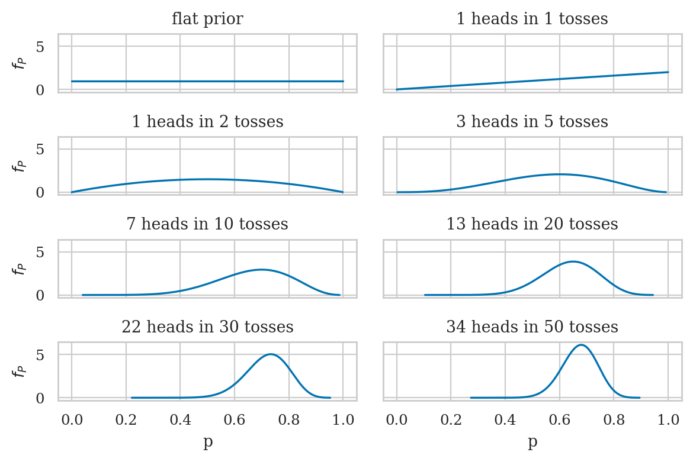
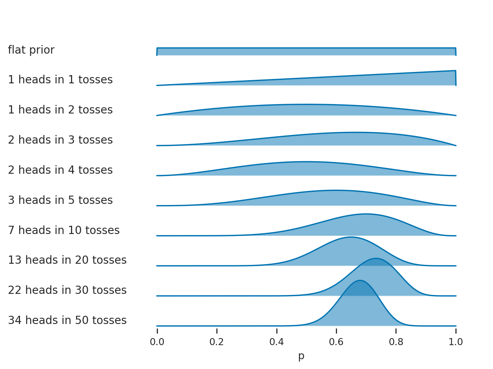
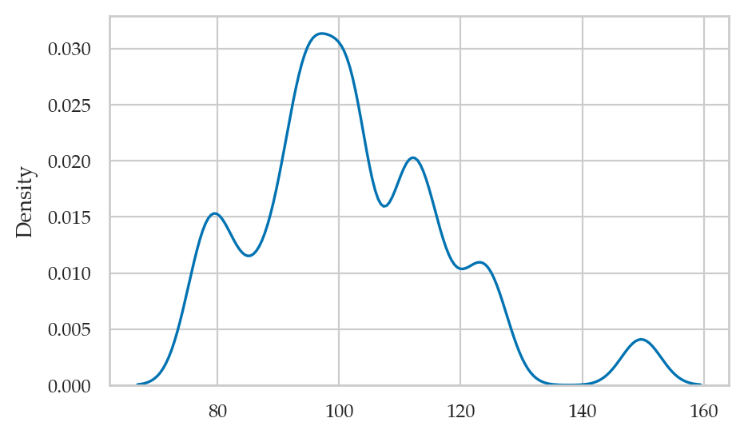
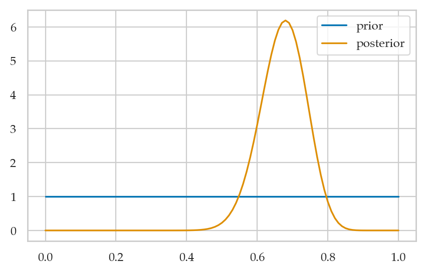
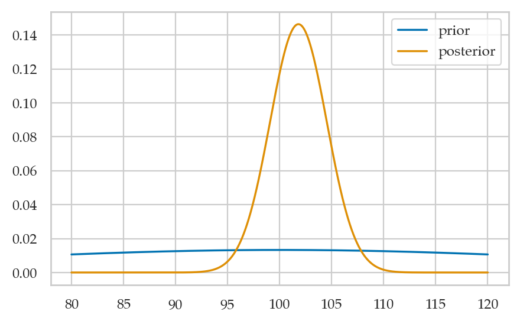

Section 5.1 — Introduction to Bayesian statistics#
This notebook contains the code examples from Section 5.1 Introduction to Bayesian statistics from the No Bullshit Guide to Statistics.
Notebook setup#
# load Python modules
import os
import numpy as np
import pandas as pd
import seaborn as sns
import matplotlib.pyplot as plt
# Figures setup
plt.clf() # needed otherwise `sns.set_theme` doesn"t work
from plot_helpers import RCPARAMS
RCPARAMS.update({"figure.figsize": (5, 3)}) # good for screen
# RCPARAMS.update({"figure.figsize": (5, 1.6)}) # good for print
sns.set_theme(
context="paper",
style="whitegrid",
palette="colorblind",
rc=RCPARAMS,
)
# High-resolution please
%config InlineBackend.figure_format = "retina"
# Where to store figures
DESTDIR = "figures/bayesian/intro"
<Figure size 640x480 with 0 Axes>
# set random seed for repeatability
np.random.seed(42)
#######################################################
from ministats.utils import savefigure
Definitions#
Bayesian inference#
Bayesian updating of posterior probabilities#
# FIGURES ONLY
from scipy.stats import bernoulli
from scipy.stats import beta
from ministats import plot_pdf
n_rows = 8
ns = [0, 1, 2, 5, 10, 20, 30, 50]
outcomes = [0, 1, 1, 3, 7, 13, 22, 34]
# outcomes were generated from coin with true p = 0.7
assert len(outcomes) == n_rows
assert len(ns) == n_rows
n_rows = int(len(outcomes))
with plt.rc_context({"figure.figsize":(6,4)}):
fig, axs_matrix = plt.subplots(n_rows//2, 2, sharex=True, sharey=True)
axs = [ax for row in axs_matrix for ax in row]
for i, ax in enumerate(axs):
heads, n = outcomes[i], ns[i]
rvPpost = beta(a=1+heads, b=1+n-heads)
plot_pdf(rvPpost, rv_name="P", ax=ax)
if i==0:
ax.set_title("flat prior")
else:
ax.set_title(f"{heads} heads in {n} tosses")
filename = os.path.join(DESTDIR, "panel_coin_posteriors.pdf")
savefigure(fig, filename)
Saved figure to figures/bayesian/intro/panel_coin_posteriors.pdf
Saved figure to figures/bayesian/intro/panel_coin_posteriors.png

# FIGURES ONLY
# Inspired by https://python-graph-gallery.com/ridgeline-graph-seaborn/
n_rows = 10
ns = [0, 1, 2, 3, 4, 5, 10, 20, 30, 50]
outcomes = [0, 1, 1, 2, 2, 3, 7, 13, 22, 34]
# outcomes were generated from coin with true p = 0.7
assert len(outcomes) == n_rows
assert len(ns) == n_rows
n_rows = int(len(outcomes))
dists = pd.DataFrame({
"case": range(n_rows),
"n": ns,
"outcome": outcomes,
})
labels = []
for i in range(n_rows):
heads, n = outcomes[i], ns[i]
if i==0:
label = "flat prior"
else:
label = f"{heads} heads in {n} tosses"
labels.append(label)
def plot_case(heads, n, *args, **kwargs):
rvPpost = beta(a=1+heads, b=1+n-heads)
eps = 0.001
pis = np.linspace(0-eps, 1.0+eps, 1000)
rvPpdf = rvPpost.pdf(pis)
ax = sns.lineplot(x=pis, y=rvPpdf, alpha=1)
ax.fill_between(pis, 0, rvPpdf, alpha=0.5)
with sns.axes_style("white"), plt.rc_context({"axes.facecolor": (0, 0, 0, 0), "xtick.bottom":True}):
g = sns.FacetGrid(dists, row='case', aspect=12, height=0.5)
g.map(plot_case, "outcome", "n")
# add labels on the left
for i, ax in enumerate(g.axes.flat):
ax.text(-0.5, 0.3, labels[i], fontsize=10, ha="left", multialignment="right")
# adjust spacing to get the axes to overlap
g.fig.subplots_adjust(hspace=-0.4)
# other figure cleanup
g.set(xlim=[-0.3,1.1])
g.set(xticks=np.linspace(0,1,6))
for i, ax in enumerate(g.axes.flat):
if i != n_rows-1:
# remove x-ticks (except for last)
ax.tick_params(bottom=False)
g.set(xlabel=" p")
g.set_titles(template="")
g.set(yticks=[])
g.set(ylabel=None)
g.despine(bottom=True, left=True)
# save as PDF and PNG
filename = os.path.join(DESTDIR, "ridgeplot_coin_posteriors.pdf")
fig = plt.gcf()
fig.savefig(filename, dpi=300, bbox_inches="tight", pad_inches=0)
filename2 = filename.replace(".pdf", ".png")
fig.savefig(filename2, dpi=300, bbox_inches="tight", pad_inches=0)
print("Saved figure to", filename)
print("Saved figure to", filename2)
Saved figure to figures/bayesian/intro/ridgeplot_coin_posteriors.pdf
Saved figure to figures/bayesian/intro/ridgeplot_coin_posteriors.png

Bayesian inference results#
heads = 34
n = 50
# posterior
rvPpost = beta(a=1+heads, b=1+n-heads)
Point estimates#
# posterior mean and median
rvPpost.mean(), rvPpost.median()
(0.6730769230769231, 0.675311350478963)
# posterior mode
pis = np.linspace(0,1,1000)
pis[np.argmax(rvPpost.pdf(pis))]
0.6796796796796797
Bayesian credible intervals#
from arviz.stats import hdi
hdi(rvPpost.rvs(10000), hdi_prob=0.9)
array([0.57183024, 0.78017613])
# ALT. using helper function
from ministats.hpdi import hpdi_from_rv
hpdi_from_rv(rvPpost, hdi_prob=0.9)
---------------------------------------------------------------------------
ModuleNotFoundError Traceback (most recent call last)
Cell In[11], line 2
1 # ALT. using helper function
----> 2 from ministats.hpdi import hpdi_from_rv
3 hpdi_from_rv(rvPpost, hdi_prob=0.9)
ModuleNotFoundError: No module named 'ministats.hpdi'
Bayesian predictions#
np.random.seed(43)
pred_tosses = []
for i in range(20):
p_post = rvPpost.rvs(1)
pred_toss = bernoulli(p=p_post).rvs(1)[0]
pred_tosses.append(pred_toss)
pred_tosses
[1, 0, 0, 0, 1, 1, 0, 1, 0, 1, 0, 1, 1, 1, 0, 0, 1, 0, 1, 1]
# # ALT. using scipy.stats vectorized params
# np.random.seed(42)
# m = 20
# pis_post = rvPpost.rvs(m)
# pred_tosses = bernoulli(p=pis_post).rvs(m)
# pred_tosses
TMP stuff (CUT ME)#
# manual numerical integral function to check posterior is well normalized
def myint(xs, ys):
delta = xs[1] - xs[0]
return np.sum(ys) * delta
# data gen 1
from scipy.stats import bernoulli
n = 50
np.random.seed(43)
tosses = bernoulli(p=0.7).rvs(n)
sum(tosses)
# tosses
34
# data gen 2
from scipy.stats import norm
n = 30
np.random.seed(50)
iqs = norm(loc=100, scale=15).rvs(n)
iqs
sns.kdeplot(iqs, bw_adjust=0.4)
np.mean(iqs), np.std(iqs)
(101.81769095067206, 15.80843728680536)

Example 1: estimating the probability of a biased coin#
#######################################################
from scipy.stats import uniform
from scipy.stats import bernoulli
# Sample of coin tosses observations (1=heads 0=tails)
# We assume they come from a Bernoulli distribution
tosses = [1,1,1,1,1,0,1,1,1,0,1,0,1,1,0,1,1,1,1,0,0,0,
1,0,1,1,1,0,1,1,1,1,1,1,0,0,0,1,1,1,0,1,0,1,
1,1,0,1,1,0]
# 1. Define a grid of possible `pi` values
ngrid1 = 101 # number of points in the grid
pis = np.linspace(0, 1, ngrid1) # [0, 0.01, ..., 1.0]
dgrid1 = (1-0) / ngrid1 # grid spacing
# 2. Define a flat prior distribution
prior1 = uniform(0,1).pdf(pis)
# 3. Compute the likelihood of `tosses` for all `pis`
likelihood = np.ones(ngrid1)
for toss in tosses:
likelihood_toss = bernoulli(p=pis).pmf(toss)
likelihood = likelihood * likelihood_toss
# ALT.
# np.prod(bernoulli(p=pis[:,np.newaxis]).pmf(tosses), axis=1)
# 4. Calculate the posterior distribution
numerator = likelihood * prior1
posterior1 = numerator / np.sum(numerator) / dgrid1
# normalization checks (CUT ME)
np.sum(prior1), np.sum(posterior1), myint(pis, prior1), myint(pis, posterior1)
(101.0, 100.99999999999997, 1.01, 1.0099999999999998)
Visualize the posterior#
sns.lineplot(x=pis, y=prior1, label='prior')
sns.lineplot(x=pis, y=posterior1, label='posterior');

Summarize the posterior#
Posterior mean#
np.mean(pis * posterior1 * dgrid1)
0.006664127951256662
Posterior median#
cumsum1 = np.cumsum(posterior1 * dgrid1)
pis[cumsum1.searchsorted(0.5)]
0.68
Posterior mode#
pis[np.argmax(posterior1)]
0.68
Predictions#
from scipy.stats import bernoulli
np.random.seed(43)
pred_tosses = []
for i in range(20):
pi_post = np.random.choice(pis, p=posterior1*dgrid1)
pred_toss = bernoulli(p=pi_post).rvs(1)[0]
pred_tosses.append(pred_toss)
pred_tosses
[0, 1, 0, 1, 0, 0, 1, 1, 1, 0, 0, 0, 1, 0, 1, 1, 1, 0, 1, 1]
Example 2: estimating the IQ score#
from scipy.stats import norm
#######################################################
# Sample of IQ observations
iqs = [ 76.6, 99.5, 90.7, 78. , 121.2, 92.8, 88.3,
116.1, 80.8, 80.1, 101.9, 112.9, 110.5, 95,
85. , 124., 149.7, 114.8, 101.9, 111.1, 94.1,
102.2, 93.8, 97.6, 102.1, 104.3, 95.8, 125.7,
97.8, 110.4]
sigma = 15 # known population standard deviation
# 1. Define a grid of possible means
ngrid2 = 1001 # number of points in the grid
mus = np.linspace(80, 120, ngrid2)
dgrid2 = (120-80) / ngrid2 # grid spacing
# 2. Define the prior = normal centered at 100 with std 30
mu0 = 100
sigma0 = 30
prior2 = norm(loc=mu0, scale=sigma0).pdf(mus)
# 3. Compute the likelihood of the data for all `mus`
likelihood = np.ones(ngrid2)
for iq in iqs:
likelihood_iq = norm(loc=mus, scale=sigma).pdf(iq)
likelihood = likelihood * likelihood_iq
# ALT.
# likelihood = np.prod(norm(loc=mus[:,np.newaxis], scale=sigma).pdf(iqs), axis=1))
# 4. Calculate the posterior distribution
numerator = likelihood * prior2
posterior2 = numerator / np.sum(numerator) / dgrid2
# normalization checks of prior and posterior
np.sum(prior2), np.sum(posterior2), myint(mus, prior2), myint(mus, posterior2)
(12.386019811983466,
25.024999999999995,
0.4954407924794161,
1.0010000000001562)
Visualize the posterior#
sns.lineplot(x=mus, y=prior2, label='prior')
sns.lineplot(x=mus, y=posterior2, label='posterior');

Summarize the posterior#
Posterior mean#
np.sum(mus * posterior2 * dgrid2)
101.80826446258413
Posterior median#
cumsum2 = np.cumsum(posterior2 * dgrid2)
mus[cumsum2.searchsorted(0.5)]
101.8
Posterior mode#
mus[np.argmax(posterior2)]
101.8
Predictions#
np.random.seed(43)
sigma = 15 # known population standard deviation
pred_iqs = []
for i in range(10):
mu_post = np.random.choice(mus, p=posterior2*dgrid2)
pred_iq = norm(loc=mu_post, scale=sigma).rvs(1)[0]
pred_iqs.append(pred_iq)
pred_iqs
[83.63670562899156,
104.30779433005354,
106.69141315621167,
115.25148552252136,
86.5861308561721,
126.49101566601618,
92.9679979691743,
79.87256003503298,
101.04324394721351,
110.0720956811958]
Explanations#
Grid approximation details#
Choosing priors#
from ministats.hpdi import hpdi_from_grid
def get_post_mean_stats(sample, sigma=15, prior_rv=None, ngrid=1001, xlims=[70,130],
stats=["mean", "median", "mode", "ci90"]):
mus = np.linspace(*xlims, ngrid)
dgrid = (xlims[1]-xlims[0]) / ngrid
prior = prior_rv.pdf(mus)
likelihoodsM = norm(loc=mus[:,np.newaxis], scale=sigma).pdf(sample)
likelihood = np.prod(likelihoodsM, axis=1)
numerator = likelihood * prior
posterior = numerator / np.sum(numerator) / dgrid
# compute stats
results = {}
if "mean" in stats:
post_mean = np.sum(mus * posterior * dgrid)
results["mean"] = post_mean
if "median" in stats:
cumsum = np.cumsum(posterior * dgrid)
post_median = mus[cumsum.searchsorted(0.5)]
results["median"] = post_median
if "mode" in stats:
post_mode = mus[np.argmax(posterior)]
results["mode"] = post_mode
if "ci90" in stats:
ci90 = hpdi_from_grid(mus, posterior*dgrid, hdi_prob=0.9)
results["ci90"] = ci90
return results
# frequentist summary
from ministats import ci_mean
np.mean(iqs), ci_mean(iqs, alpha=0.1)
(101.82333333333334, [96.83429390645762, 106.81237276020906])
get_post_mean_stats(iqs, prior_rv=norm(loc=100, scale=50))
{'mean': 101.81787969425056,
'median': 101.8,
'mode': 101.8,
'ci90': [97.3, 106.3]}
get_post_mean_stats(iqs, prior_rv=norm(loc=100, scale=30))
{'mean': 101.80826446280992,
'median': 101.8,
'mode': 101.8,
'ci90': [97.48, 106.47999999999999]}
get_post_mean_stats(iqs, prior_rv=norm(loc=100, scale=20))
{'mean': 101.78977505112476,
'median': 101.8,
'mode': 101.8,
'ci90': [97.18, 106.12]}
get_post_mean_stats(iqs, prior_rv=norm(loc=100, scale=10))
{'mean': 101.69612403100776,
'median': 101.68,
'mode': 101.68,
'ci90': [97.24, 105.94]}
get_post_mean_stats(iqs, prior_rv=norm(loc=100, scale=1))
{'mean': 100.21450980392156,
'median': 100.24,
'mode': 100.24,
'ci90': [98.62, 101.74]}
Discussion#
Bayesian decision theory#
Comparing Bayesian and frequentist approaches to statistical inference#
Strengths and weaknesses of Bayesian approach#
Exercises#
Exercise: Bayes rule for diagnostic test#
A group of researchers has designed a new inexpensive and painless test for detecting lung cancer. The test is intended to be an initial screening test for the population in general. A positive result (presence of lung cancer) from the test would be followed up immediately with medication, surgery or more extensive and expensive test. The researchers know from their studies the following facts:
Test gives a positive result in \(98\%\) of the time when the test subject has lung cancer.
Test gives a negative result in \(96\%\) of the time when the test subject does not have lung cancer.
In general population approximately one person in 1000 has lung cancer.
a) The researchers are happy with these preliminary results (about \(97\%\) success rate), and wish to get the test to market as soon as possible. How would you advise them? Base your answer on Bayes’ rule computations.
HINT: Relatively high false negative (cancer doesn’t get detected) or high false positive (unnecessarily administer medication) rates are typically bad and undesirable in tests.
Here are some probability values that can help you figure out if you copied the right conditional probabilities from the question.
P(Test gives positive | Subject does not have lung cancer) = \(4\%\)
P(Test gives positive and Subject has lung cancer) = \(0.098\%\) this is also referred to as the joint probability of test being positive and the subject having lung cancer.
Is p(has cancer|test result is positive) computed using Bayes’ formula (or its complement p(does not have cancer|test result is positive))?
Is the result p(has cancer|test result is positive)=… (or p(does not have cancer|test result is positive)=…)
Is the result motivated with something like
See here for viz https://sophieehill.shinyapps.io/base-rate-viz/
# In general population approximately one person in 1000 has lung cancer.
prev = 0.001
# Test gives a positive result in 98% of the time when the test subject has lung cancer.
# Sensitivity: the ability of a test to correctly identify patients with a disease.
pPgC = sens = 0.98
# Test gives a negative result in 96% of the time when the test subject does not have lung cancer.
# Specificity: the ability of a test to correctly identify people without the disease.
pNgNC = spec = 0.96
# P(Test gives positive | Subject does not have lung cancer) = 4%
pPgNC = (1-spec)
pPgNC
0.040000000000000036
# P(Test gives positive and Subject has lung cancer) = 0.098%
pPC = sens*prev
pPC
0.00098
pP = prev*sens + (1-prev)*(1-spec)
pP
0.04094000000000004
# Pr(C|P) = Pr(C and P) / Pr(P)
pCgP = pPC / pP
pCgP
0.02393746946751341
# ALT
# Pr(C|P) = Pr(P|C)Pr(C) / Pr(P)
pCgP = pPgC*prev / pP
pCgP
0.02393746946751341
1 - pCgP
0.9760625305324866
Given the high rate of false-positives 97.6%, I would advise the researchers not to proceed with the screening to the whole population. There will be way too many people scared for nothing. The test can be used for patients who are suspected they might have lung cancer. In such a sub-population the prevalence would be higher and thus the false-positive rate would decrease. I would possibly use a visualization tool to illustrate the base rate fallacy problem.
Exercise: algae#
see assignment2 from the BDA course